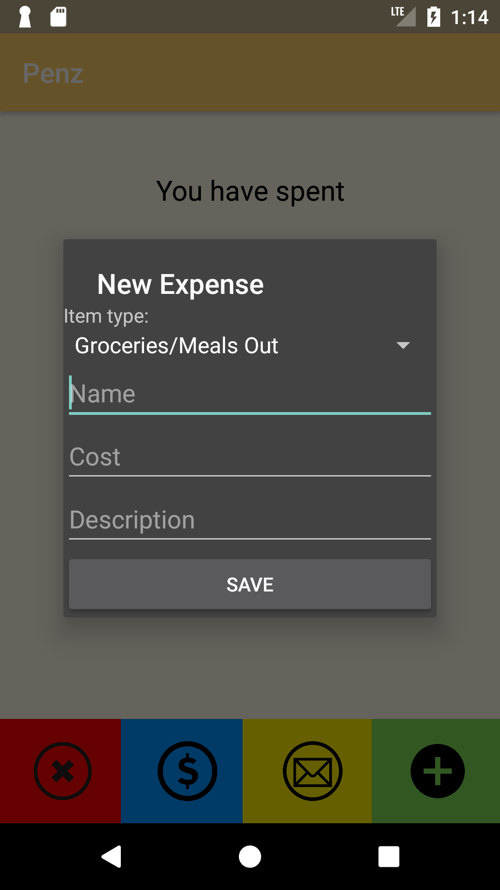
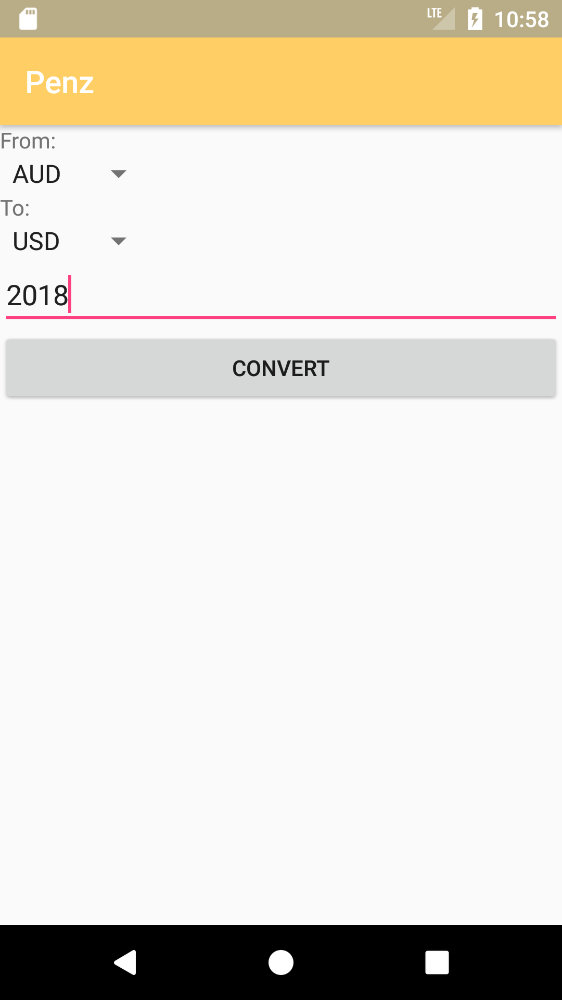
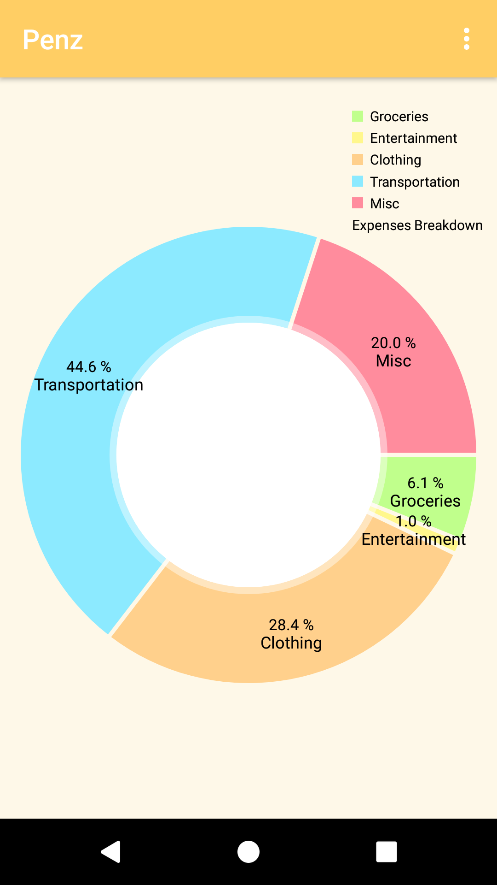
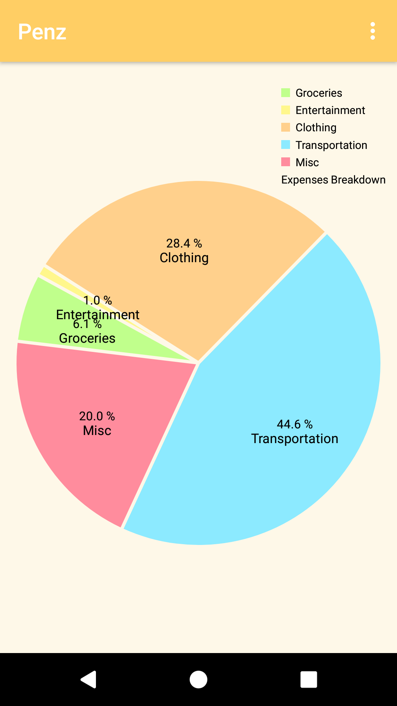

Nick Tan
I am currently an undergraduate at Lewis and Clark College, pursuing a major in mathematics and computer science, and a minor in economics. I am passionate about solving problems and creating meaningful applications, and intend to be a Software Engineer. I am interested in artificial intelligence, cloud computing and cybersecurity. Projects that I'm working on presently include a text-to-audio application hosted on AWS, and AI programs.
Experience
UX Intern
- Plan, design and present iteratively an extensive user management center using UX design principles and techniques for the Zapproved E-Discovery platform
- Researched user attention span and web page loading times by analysing various published papers and articles
- Updated the Zapproved UX color palette guide by cataloguing color schemes utilized by the various products
Cybersecurity Research Intern
- Published two papers and a tutorial on cybersecurity education on peer instruction and content structure by creating an algorithm measuring usefulness and satisfaction, and utilizing available online resources
- Developed a storyline-driven cryptography exercise titled DaVinci Code for cloud-based cybersecurity course EDURange
- Presented at two conferences targeted towards educators and professionals on various methods of promoting better cybersecurity education
IT Operations Technician Assistant
- Liaise between the IT department and Acceptto to implement a MFA system with machine learning capabilities on the college’s core services
- Install and maintain multiple variations of hardware, software and network systems on campus
- Provide customer support and troubleshooting services for over 200 faculty and staff
- Building and maintaining a Beowulf cluster with 24 computers for the academic departments of the college
- Built a computer worth $1,500 for the Geology department as part of an educational film project
Resident Advisor
- Engaged the needs of 36 residents through the creation of several community building programs
- Responded to crises and aided in conflict resolution for a community of over 200 residents
- Communicated and collaborated with a team of eight people in order to maintain the premises and the residents’ safety
Education
Lewis & Clark College
GPA: 3.88
Courses: Software Development · Artificial Intelligence · Computer Graphics · Networks and Web Development · Theory of Computing · Statistics · Differential Equations
AIT Budapest
Courses: Mobile Software Development · Algorithms and Data Structures · Structures and Dynamics of Complex Networks · Graph Theory · Combinatorial Optimization · UI Design
Skills & Interests
Proficient: Java, Python
Experience: C
Basic: Ruby on Rails, React, JavaScript, HTML, CSS, MySQL, PHP
AWS, Agile Development, Scrum, UX Design, Axure, PC, Mac, and Network troubleshooting, Hardware
Chinese, Cantonese, Malay, English
Apart from coding and exploring my interests in Software Engineering, I do enjoy a wider variety of activities. I am very passionate about cooking, and through the years have developed several personal recipes. I started cooking for my family at 13 years old, and from then the enthusiasm only kept growing.
Besides cooking, I enjoy being outdoors. Biking and Scouting remain favorites, and I cherish every opportunity I get to be out in nature. Biking provides me a sense of freedom and excitement, and Scouting taught me many of life's most valuable lessons. I am a King's Scout, the Malaysian equivalent of an Eagle Scout.
Certifications & Publications
AWS Developer Associate 2018
Applying A Framework For Creating And Analyzing Cybersecurity Questions For Peer Instruction. CCSC-NW 2017, Richland, WA. October 6, 2017
Analyzing And Improving The NCL Ethical Hacking Lab Exercises. CSCE-SAM 2017, Las Vegas, NV. July 17, 2017
Projects
I enjoy exploring different aspects of software engineering, including AI, web development, mobile development, cloud computing, and so on.
Here are some of my favorite projects that I am working/have worked on:
Sorting Hat
Sorting Hat is a Java program created by my team to allocate first year students into their respective mandatory first year classes at Lewis & Clark College. This was a team project, consisting of Mack Beveridge, Maxwell Levin, James Tostado, Sam Peers Nitzberg, and Lars Mayrand. With this program, the college's staff can perform the task within minutes, whereas manually it would have taken them over a week.
The program uses a modified Hungarian algorithm that takes a cost matrix of variables such as student preferences, sport, gender, etc. Using the GUI, the user would input CSV files for the data to be parsed. The results are outputted into a CSV file, and a report is generated on the GUI. The program takes milliseconds to complete, and on average, 92% of students get into their top 3 choices.
- Modified Hungarian Algorithm for optimized runtime
- Multi-variable sort (6 preferences, athlete status, gender, previous professor status)
- Error handling (Checks for human error including presence of headers, duplicated students, duplicated courses, etc)
- Headers are hyperparameters (can vary in terms of text)
- Generates a report (Shows success percentages, program efficiency, etc)

Instructions are available for users

Uploaded necessary files using the buttons on the left

Program ran successfully! Report generated on GUI, and output CSV file is created
Budget Tracker
This is my favorite Android project! It is an application that allows me to log and email my expenses to my parents every month. Prior to creating the application, I would always key my expenses on my phone before entering it onto my computer. This was tedious and the information would sometimes get lost in translation.
As I was studying abroad in Budapest for a semester, the application I built automatically converted the recorded transactions into US dollars, simplifying the conversion process. It also allowed users to create visuals / charts of their expenditure. That was definitely one of the key moments where I was encouraged to use my passion to create to solve an everyday problem.
- Ability to enter income, expenditure into categories
- View list of expenditures
- Visualize the categories in a pie chart and toggle different views
- Email expenditures
- Convert expenditures from any currency to any currency using the latest rates
- A splash screen of the app logo
Main Screen and list of expenditures
 
Adding an expenditure and converting currencies
 
Pie chart views
CIFAR-10 Analysis
This is my first AI project using TensorFlow. I used TensorFlow to analyze the CIFAR-10 images.
- Ability to enter income, expenditure into categories
- View list of expenditures
- Visualize the categories in a pie chart and toggle different views
- Email expenditures
- Convert expenditures from any currency to any currency using the latest rates
- A splash screen of the app logo
Main Screen and list of expenditures
Adding an expenditure and converting currencies
Pie chart views
Breakout
This is my favorite Android project! It is an application that allows me to log and email my expenses to my parents every month. Prior to creating the application, I would always key my expenses on my phone before entering it onto my computer. This was tedious and the information would sometimes get lost in translation.
As I was studying abroad in Budapest for a semester, the application I built automatically converted the recorded transactions into US dollars, simplifying the conversion process. It also allowed users to create visuals / charts of their expenditure. That was definitely one of the key moments where I was encouraged to use my passion to create to solve an everyday problem.
- Ability to enter income, expenditure into categories
- View list of expenditures
- Visualize the categories in a pie chart and toggle different views
- Email expenditures
- Convert expenditures from any currency to any currency using the latest rates
- A splash screen of the app logo
Main Screen and list of expenditures
Adding an expenditure and converting currencies
Pie chart views
Text-to-Audio Converter
This project is still in development.
The idea is to create a web application hosted on AWS that will allow users to convert text into an audio file. Texts can either be in the form of pdfs or just plain text in a textbox. The user will then choose the voice type and accents, and run the program to generate the audio file! I hope to use Rekognition, Polly, and other AWS services for this project.
I was inspired to create this through my habit of listening to podcasts. I hope to create audiobooks using this program, and also be able to listen to my exam notes or anything of interest in general.
- Able to load a pdf or texts onto the application
- Ability to choose voice type and accents for the audio file
- Automatically download the audio file when the conversion has completed